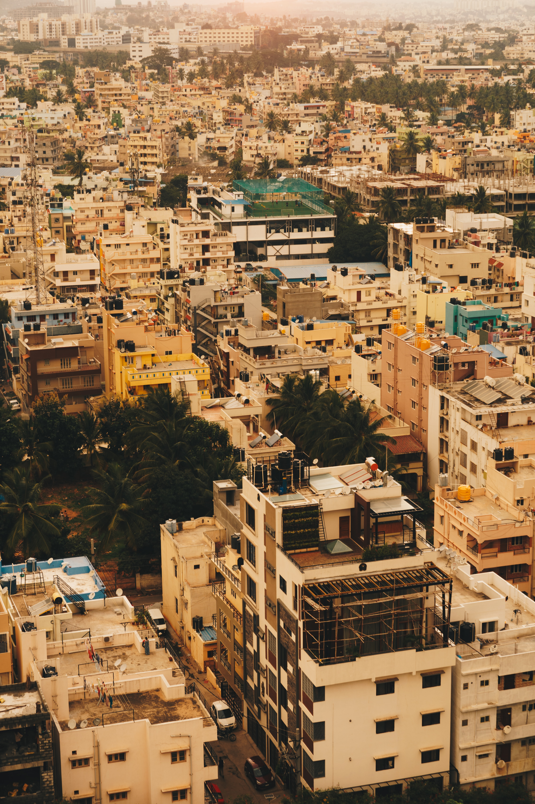
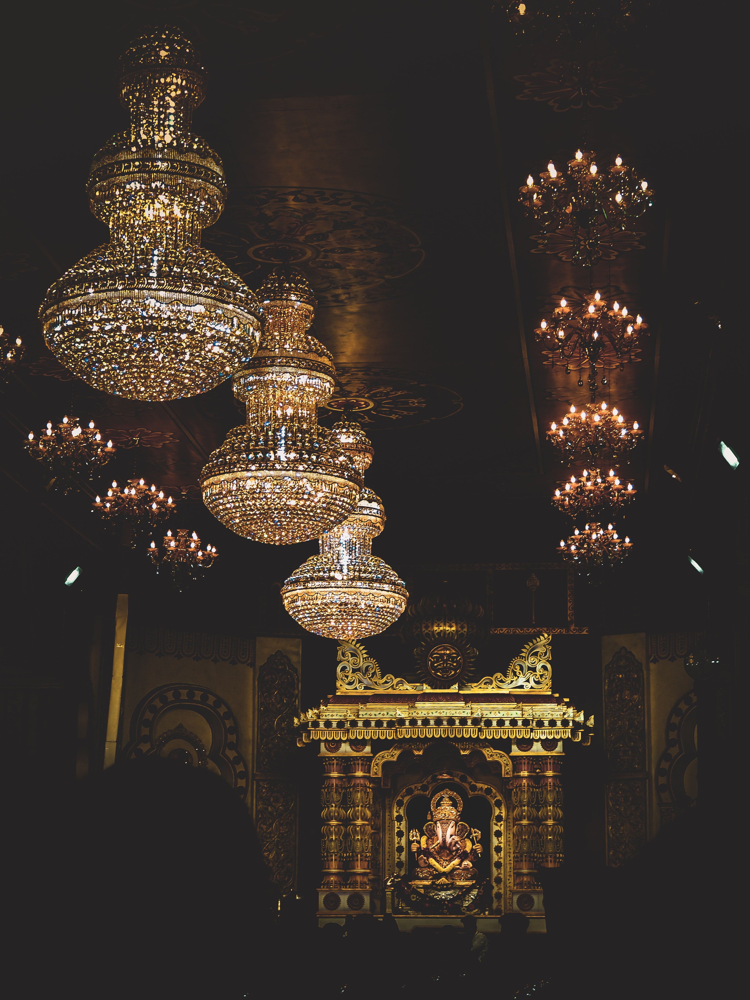
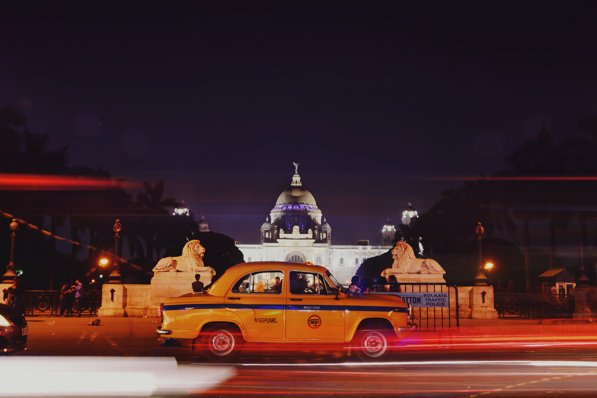
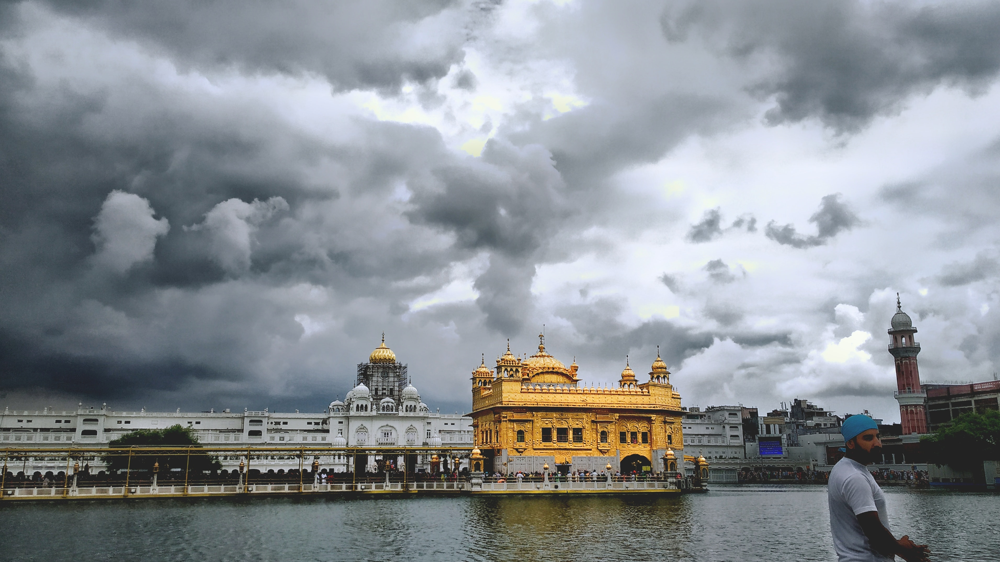
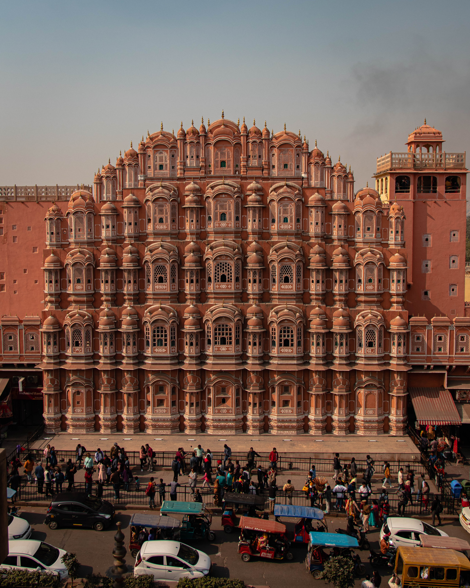

MUMBAI

LEARN ABOUT MUMBAI
Mumbai (English: /mʊmˈbaɪ/, Marathi: [ˈmumbəi]; also known as Bombay /bɒmˈbeɪ/, the official name until 1995) is the capital city of the Indian state of Maharashtra. According to the United Nations, as of 2018, Mumbai is the second-most populous city in the country after Delhi and the seventh-most populous city in the world with a population of roughly 20 million.[14] As per Indian government population census of 2011, Mumbai was the most populous city in India with an estimated city proper population of 12.5 million living under Municipal Corporation of Greater Mumbai.[15] Mumbai is the centre of the Mumbai Metropolitan Region, the sixth most populous metropolitan area in the world with a population of over 23 million.[16] Mumbai lies on the Konkan coast on the west coast of India and has a deep natural harbour. In 2008, Mumbai was named an alpha world city.[17][18] It has the highest number of millionaires and billionaires among all cities in India.[19][20] Mumbai is home to three UNESCO World Heritage Sites: the Elephanta Caves, Chhatrapati Shivaji Maharaj Terminus, and the city's distinctive ensemble of Victorian and Art Deco buildings.[21][22]
The seven islands that constitute Mumbai were originally home to communities of Marathi language speaking Koli people.[23][24][25] For centuries, the islands were under the control of successive indigenous empires before being ceded to the Portuguese Empire and subsequently to the East India Company when in 1661 Charles II of England married Catherine of Braganza and as part of her dowry Charles received the ports of Tangier and Seven Islands of Bombay.[26] During the mid-18th century, Bombay was reshaped by the Hornby Vellard project,[27] which undertook reclamation of the area between the seven islands from the sea.[28] Along with construction of major roads and railways, the reclamation project, completed in 1845, transformed Bombay into a major seaport on the Arabian Sea. Bombay in the 19th century was characterised by economic and educational development. During the early 20th century it became a strong base for the Indian independence movement. Upon India's independence in 1947 the city was incorporated into Bombay State. In 1960, following the Samyukta Maharashtra Movement, a new state of Maharashtra was created with Bombay as the capital.[29]
Mumbai is the financial, commercial,[30] and the entertainment capital of India. It is also one of the world's top ten centres of commerce in terms of global financial flow,[31] generating 6.16% of India's GDP,[32] and accounting for 25% of industrial output, 70% of maritime trade in India (Mumbai Port Trust and JNPT),[33] and 70% of capital transactions to India's economy.[34][35] Mumbai has the eighth-highest number of billionaires of any city in the world,[36] and Mumbai's billionaires had the highest average wealth of any city in the world in 2008.[37][38] The city houses important financial institutions and the corporate headquarters of numerous Indian companies and multinational corporations. It is also home to some of India's premier scientific and nuclear institutes. The city is also home to Bollywood and Marathi cinema industries. Mumbai's business opportunities attract migrants from all over India.
DELHI

LEARN ABOUT DELHI
Delhi (English: /ˈdɛli/; Hindi: [ˈdɪlːiː] Dillī; Punjabi: [ˈdɪlːiː] Dillī; Urdu: [ˈdɛɦliː] Dêhlī),[15] officially the National Capital Territory (NCT) of Delhi, is a city and a union territory of India containing New Delhi, the capital of India.[16][17] It is bordered by the state of Haryana on three sides and by Uttar Pradesh to the east. The NCT covers an area of 1,484 square kilometres (573 sq mi).[5] According to the 2011 census, Delhi's city proper population was over 11 million,[6] the second-highest in India after Mumbai,[18] while the whole NCT's population was about 16.8 million.[7] Delhi's urban area is now considered to extend beyond the NCT boundaries, and include the neighbouring satellite cities of Ghaziabad, Faridabad, Gurgaon and Noida in an area called the National Capital Region (NCR) and had an estimated 2016 population of over 26 million people, making it the world's second-largest urban area according to the United Nations.[8] Recent estimates of the metro economy of its urban area have ranked Delhi either the most or second-most productive metro area of India.[11][19] Delhi is the second-wealthiest city in India after Mumbai and is home to 18 billionaires and 23,000 millionaires.[20] Delhi ranks fifth among the Indian states and union territories in human development index.[13] Delhi has the second-highest GDP per capita in India.[10] Delhi is of great historical significance as an important commercial, transport, and cultural hub, as well as the political centre of India.[21]
Delhi is one of the oldest cities in the world, and has been continuously inhabited since the 6th century BCE.[22] Through most of its history, Delhi has served as a capital of various kingdoms and empires, most notably the Tomars, Chahamanas, Delhi Sultanate and Mughals. It is also assumed to be the location of Indraprastha, the capital of the Pandavas in the epic Mahabharata. The city has been captured, ransacked and rebuilt several times, particularly during the medieval period, and modern Delhi is a cluster of a number of cities spread across the metropolitan region. For many centuries Delhi has been a dominant trading and commercial centre in northern India, and since the 1990s it has emerged as an important node in the international corporate and financial network.[23]
A union territory, the political administration of the NCT of Delhi today more closely resembles that of a state of India, with its own legislature, high court and an executive council of ministers headed by a Chief Minister. New Delhi is jointly administered by the federal government of India and the local government of Delhi, and serves as the capital of the nation as well as the NCT of Delhi. Delhi hosted the inaugural 1951 Asian Games, 1982 Asian Games, 1983 NAM Summit, 2010 Men's Hockey World Cup, 2010 Commonwealth Games, 2012 BRICS Summit and was one of the major host cities of the 2011 Cricket World Cup.
Delhi is also the centre of the National Capital Region (NCR), which is a unique 'interstate regional planning' area created by the National Capital Region Planning Board Act of 1985.[24][25]
BENGALURU

LEARN ABOUT BENGALURU
Bangalore (/bæŋɡəˈlɔːr/), officially known as Bengaluru[12] ([ˈbeŋɡəɭuːɾu] (About this soundlisten)), is the capital and the largest city of the Indian state of Karnataka. It has a population of more than 8 million and a metropolitan population of around 11 million, making it the third most populous city and fifth most populous urban agglomeration in India.[13] Located in southern India on the Deccan Plateau, at a height of over 900 m (3,000 ft) above sea level, Bangalore is known for its pleasant climate throughout the year. Its elevation is the highest among the major cities of India.[14]
The city's history dates back to around 890 CE, in a stone inscription found at the Nageshwara Temple in Begur, Bangalore. The Begur inscription is written in Halegannada (ancient Kannada), mentions 'Bengaluru Kalaga' (battle of Bengaluru). It was a significant turning point in the history of Bangalore as it bears the earliest reference to the name 'Bengaluru'.[15] In 1537 CE, Kempé Gowdā – a feudal ruler under the Vijayanagara Empire – established a mud fort considered to be the foundation of modern Bangalore and its oldest areas, or petes, which exist to the present day. After the fall of Vijayanagar empire in 16th century, the Mughals sold Bangalore to Chikkadevaraja Wodeyar (1673–1704), the then ruler of the Kingdom of Mysore for three lakh rupees.[16] When Haider Ali seized control of the Kingdom of Mysore, the administration of Bangalore passed into his hands. It was captured by the British East India Company after victory in the Fourth Anglo-Mysore War (1799), who returned administrative control of the city to the Maharaja of Mysore. The old city developed in the dominions of the Maharaja of Mysore and was made capital of the Princely State of Mysore, which existed as a nominally sovereign entity of the British Raj. In 1809, the British shifted their cantonment to Bangalore, outside the old city, and a town grew up around it, which was governed as part of British India. Following India's independence in 1947, Bangalore became the capital of Mysore State, and remained capital when the new Indian state of Karnataka was formed in 1956. The two urban settlements of Bangalore – city and cantonment – which had developed as independent entities merged into a single urban centre in 1949. The existing Kannada name, Bengalūru, was declared the official name of the city in 2006.
Bangalore is widely regarded as the "Silicon Valley of India" (or "IT capital of India") because of its role as the nation's leading information technology (IT) exporter.[1] Indian technological organisations are headquartered in the city. A demographically diverse city, Bangalore is the second fastest-growing major metropolis in India.[17][18] Recent estimates of the metro economy of its urban area have ranked Bangalore either the fourth- or fifth-most productive metro area of India.[10][19] Bangalore is home to 7,700 millionaires and 8 billionaires with a total wealth of $320 billion.[20][21] It is home to many educational and research institutions. Numerous state-owned aerospace and defence organisations, are located in the city. The city also houses the Kannada film industry. It was ranked the most liveable Indian city with a population of over a million under the Ease of Living Index 2020.[22]
CHENNAI

LEARN ABOUT CHENNAI
Chennai (/ˈtʃɛnaɪ/ (About this soundlisten), Tamil: [ˈt͡ɕenːaɪ̯]; also known as Madras,[a] the official name until 1996) is the capital of the Indian state of Tamil Nadu. Located on the Coromandel Coast of the Bay of Bengal, it is one of the largest cultural, economic and educational centres of south India. According to the 2011 Indian census, it is the sixth-most populous city and fourth-most populous urban agglomeration in India. The city together with the adjoining regions constitutes the Chennai Metropolitan Area, which is the 36th-largest urban area by population in the world.[11] The traditional and de facto gateway of South India, Chennai is among the most-visited Indian cities by foreign tourists. It was ranked the 43rd-most visited city in the world for the year 2015[12] and was ranked the 36th-most visited city in the world for the year 2019.[13] The Quality of Living Survey rated Chennai as the safest city in India.[14] Chennai attracts 45 percent of health tourists visiting India, and 30 to 40 percent of domestic health tourists.[15] As such, it is termed "India's health capital".[16][17] Chennai has the fifth-largest urban economy of India.[9]
Chennai had the third-largest expatriate population in India, at 35,000 in 2009, 82,790 in 2011 and estimated at over 100,000 by 2016.[18][19] Tourism-guide publisher Lonely Planet named Chennai as one of the top ten cities in the world to visit in 2015.[20] Chennai is ranked as a beta-level city in the Global Cities Index,[21] and was ranked the best city in India by India Today in the 2014 annual Indian city survey.[22][23] In 2015 Chennai was named the "hottest" city (city worth visiting and worth living in for long term) by the BBC, citing the mixture of both modern and traditional values.[24] National Geographic mentioned Chennai as the only South Asian city to feature in its 2015 "Top 10 food cities" list.[25] Chennai was also named the ninth-best cosmopolitan city in the world by Lonely Planet.[26] In October 2017, Chennai was added to the UNESCO Creative Cities Network (UCCN) list for its rich musical tradition.[27]
The Chennai Metropolitan Area is one of the largest municipal economies of India. More than one-third of India's automobile industry being based in the city. Home to the Tamil film industry, Chennai is also known as a major film production centre. Chennai is one of the 100 Indian cities to be developed as a smart city under the Smart Cities Mission.
HYDERABAD

LEARN ABOUT HYDERABAD
Hyderabad (/ˈhaɪdərəbæd/ (About this soundlisten) HY-dər-ə-bad,[6] Telugu: [ˈɦaɪ̯daraːbaːd], Urdu: [ˈɦɛːdəɾaːbaːd]) is the capital and largest city of the Indian state of Telangana and the de jure capital of Andhra Pradesh.[A] It occupies 650 square kilometres (250 sq mi) on the Deccan Plateau along the banks of the Musi River, in the northern part of South India. With an average altitude of 542 metres (1,778 ft), much of Hyderabad is situated on hilly terrain around artificial lakes, including the Hussain Sagar lake, predating the city's founding, in the north of the city centre. According to the 2011 Census of India, Hyderabad is the fourth-most populous city in India with a population of 6.9 million residents within the city limits, and has a population of 9.7 million residents in the metropolitan region, making it the sixth-most populous metropolitan area in India. With an output of US$74 billion, Hyderabad has the fifth-largest urban economy in India.
Muhammad Quli Qutb Shah established Hyderabad in 1591 to extend the capital beyond the fortified Golconda. In 1687, the city was annexed by the Mughals. In 1724, Mughal governor Nizam Asaf Jah I declared his sovereignty and founded the Asaf Jahi dynasty, also known as the Nizams. Hyderabad served as the imperial capital of the Asaf Jahis from 1769 to 1948. As capital of the princely state of Hyderabad, the city housed the British Residency and cantonment until Indian independence in 1947. Hyderabad was annexed by the Indian Union in 1948 and continued as a capital of Hyderabad State (1948–56). After the introduction of the States Reorganisation Act of 1956, Hyderabad was made the capital of the newly formed Andhra Pradesh. In 2014, Andhra Pradesh was bifurcated to form Telangana and Hyderabad became the joint capital of the two states with a transitional arrangement scheduled to end in 2024. Since 1956, the city has housed the winter office of the President of India.
Relics of the Qutb Shahi and Nizam rules remain visible today; the Charminar has come to symbolise the city. By the end of early modern era, the Mughal Empire declined in the Deccan and the Nizams' patronage had attracted men of letters from different parts of the world. The amalgamation of local and migrated artisans had originated a distinctive culture, and the city emerged as a significant centre of oriental culture. Painting, handicraft, jewellery, literature, dialect and clothing are prominent still today. Through its cuisine, the city is listed as a UNESCO creative city of gastronomy. The Telugu film industry based in the city is the country's second-largest producer of motion pictures.
Until the 19th century Hyderabad was known for the pearl industry and was nicknamed the "City of Pearls", and was the only Golconda Diamonds trading centre in the world. Many of the city's historical and traditional bazaars remain open. Hyderabad's central location between the Deccan Plateau and the Western Ghats, and industrialisation throughout the 20th century attracted major Indian research, manufacturing, educational and financial institutions. Since the 1990s, the city has emerged as an Indian hub of pharmaceuticals and biotechnology. The formation of special economic zones and HITEC City dedicated to information technology has encouraged leading multinationals to set up operations in Hyderabad.
PUNE

LEARN ABOUT PUNE
Pune, known as Poona until 1978[17] (Marathi: [puɳe] (About this soundlisten); English: /ˈpuːnə/),[18][19][20][21][22] is the second-largest metropolitan city in the Indian State of Maharashtra and the eighth most populous city in India, with an estimated population of 7.4 million as of 2020.[23] It has been ranked as "the most livable city in India" several times.[24] Along with the municipal corporation limits of PCMC and the three cantonment towns of Camp, Khadki and Dehu Road, Pune forms the urban core of the eponymous Pune Metropolitan Region (PMR).[25] According to the 2011 census the urban area had a combined population of 5.05 million whilst the population of the metropolitan region was estimated at 7.4 million.[9] Situated 560 metres (1,837 feet) above sea level on the Deccan plateau on the right bank of the Mutha river,[26] Pune is also the administrative headquarters of its namesake district.
In the 18th century, the city was the seat of the Peshwas, the prime ministers of the Maratha Empire and one of the most important political centres on the Indian subcontinent.[27] The city was also ruled by the Ahmadnagar Sultanate, the Mughals and the Adil Shahi dynasty. Historical landmarks include Lal Mahal, the Kasba Ganapati temple and Shaniwar Wada. Major historical events involving the city include the Mughal–Maratha Wars and the Anglo-Maratha Wars.
Pune is widely regarded as the second major "IT hub of India"[28][29] and the top "automobile and manufacturing hub of India".[30] It is known as the Oxford of the East with the presence of a wide range of educational institutions.[31][32] India's first indigenously run girls' school was started in Pune by Savitribai Phule and Fatima Sheikh.[33] The city has emerged as a major educational hub in recent decades, with nearly half of the total number of international students in the country studying in Pune.[34][35] Research institutes of information technology, education, management and training attract students and professionals from India and overseas.
KOLKATA

LEARN ABOUT KOLKATA
Kolkata (English: /kɒlˈkɑːtə/[15] or /kɒlˈkʌtə/,[16] Bengali: [kolˈkata] (About this soundlisten); also known as Calcutta /kælˈkʌtə/,[16] the official name until 2001) is the capital of the Indian state of West Bengal. Located on the eastern bank of the Hooghly River, the city is approximately 80 kilometres (50 mi) west of the border with Bangladesh. It is the primary business, commercial, and financial hub of Eastern India and the main port of communication for North-East India.[17] According to the 2011 Indian census, Kolkata is the seventh-most populous city in India, with a population of 4.5 million residents within the city limits, and a population of over 14.1 million residents in the Kolkata Metropolitan Area, making it the third-most populous metropolitan area in India. The Port of Kolkata is India's oldest operating port and its sole major riverine port. Kolkata is regarded as the cultural capital of India.[18][1]
In the late 17th century, the three villages that predated Calcutta were ruled by the Nawab of Bengal under Mughal suzerainty. After the Nawab granted the East India Company a trading licence in 1690,[19] the area was developed by the Company into an increasingly fortified trading post. Nawab Siraj ud-Daulah occupied Calcutta in 1756, and the East India Company retook it the following year. In 1793 the East India company was strong enough to abolish rule, and assumed full sovereignty of the region. Under the company rule and later under the British Raj, Calcutta served as the capital of British-held territories in India until 1911, when its perceived geographical disadvantages, combined with growing nationalism in Bengal, led to a shift of the capital to New Delhi. Calcutta was the centre for the Indian independence movement. Following independence in 1947, Kolkata, which was once the centre of Indian commerce, culture, and politics, suffered many decades of political violence and economic stagnation.[20]
A demographically diverse city, the culture of Kolkata features idiosyncrasies that include distinctively close-knit neighbourhoods (paras) and freestyle conversations (adda). Kolkata is home to West Bengal's film industry Tollywood, and cultural institutions, such as the Academy of Fine Arts, the Victoria Memorial, the Asiatic Society, the Indian Museum and the National Library of India. Among scientific institutions, Kolkata hosts the Agri Horticultural Society of India, the Geological Survey of India, the Botanical Survey of India, the Calcutta Mathematical Society, the Indian Science Congress Association, the Zoological Survey of India, the Institution of Engineers, the Anthropological Survey of India and the Indian Public Health Association. Four Nobel laureates and two Nobel Memorial Prize winners are associated with the city.[21] Though home to major cricketing venues and franchises, Kolkata differs from other Indian cities by focusing on association football and other sports.
PUNJAB

LEARN ABOUT PUNJAB
Punjab (/pʌnˈdʒɑːb, -ˈdʒæb, ˈpʌn-/; Gurmukhi: ਪੰਜਾਬ; Shahmukhi: پنجاب; Punjabi: [pənˈdʒaːb] (About this soundlisten); also romanised as Panjāb or Panj-Āb)[a] is a geopolitical, cultural, and historical region in South Asia, specifically in the northern part of the Indian subcontinent, comprising areas of eastern Pakistan and northern India. The boundaries of the region are ill-defined and focus on historical accounts.
The geographical definition of the term "Punjab" has changed over time. In the 16th century Mughal Empire it referred to a relatively smaller area between the Indus and the Sutlej rivers.[10] In British India, until the Partition of India in 1947, the Punjab Province encompassed the present-day Indian states and union territories of Punjab, Haryana, Himachal Pradesh, Chandigarh, and Delhi and the Pakistani regions of Punjab and Islamabad Capital Territory. It bordered the Balochistan and Khyber-Pakhtunkhwa regions to the west, Kashmir to the north, the Hindi Belt to the east, and Rajasthan and Sindh to the south.
The predominant ethnolinguistic group of the Punjab region is the Punjabi people, who speak the Indo-Aryan Punjabi language. Punjabi Muslims are the majority in western Punjab (Pakistan), while Punjabi Sikhs and Hindus are the majority in eastern Punjab (India). Other religious groups are Christianity, Jainism, Zoroastrianism, Buddhism, and Ravidassia. The Punjab region was the cradle for the Indus Valley Civilisation. The region had numerous migrations by the Indo-Aryan peoples. The land was later invaded and contested by the Persians, Mauryans, Indo-Greeks, Indo-Scythians, Kushans, Macedonians, Ghaznavids, Turkic, Mongols, Timurids, Mughals, Marathas, Arabs, Pashtuns, British, and other peoples. Historic foreign invasions mainly targeted the most productive central region of the Punjab known as the Majha region,[11] which is also the bedrock of Punjabi culture and traditions.[12] The Punjab region is often referred to as the breadbasket in both India and Pakistan.
JAIPUR

LEARN ABOUT JAIPUR
Jaipur (/ˈdʒaɪpʊər/ (About this soundlisten);[6][7][8] Hindi: [ˈdʒəjpʊr]) is the capital and the largest city of the Indian state of Rajasthan. As of 2011, the city had a population of 3.1 million, making it the tenth most populous city in the country. Jaipur is also known as the Pink City, due to the dominant color scheme of its buildings. It is located 268 km (167 miles) from the national capital New Delhi.
Jaipur was founded in 1727 by the Kacchawa Rajput ruler Jai Singh II,[9][10] the ruler of Amer, after whom the city is named. It was one of the earliest planned cities of modern India, designed by Vidyadhar Bhattacharya.[11] During the British Colonial period, the city served as the capital of Jaipur State. After independence in 1947, Jaipur was made the capital of the newly formed state of Rajasthan.
Jaipur is a popular tourist destination in India and forms a part of the west Golden Triangle tourist circuit along with Delhi and Agra (240 km, 149 mi).[12] It also serves as a gateway to other tourist destinations in Rajasthan such as Jodhpur (348 km, 216 mi), Jaisalmer (571 km, 355 mi), Udaipur (421 km, 262 mi), Kota (252 km, 156 mi) and Mount Abu (520 km, 323 mi). Jaipur is located 616 km from Shimla.
On 6 July 2019, UNESCO World Heritage Committee inscribed Jaipur the "Pink City of India" among its World Heritage Sites.[13] The city is also home to the UNESCO World Heritage Sites Amer Fort and Jantar Mantar.